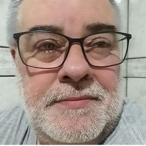
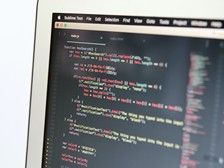

Andre Luis Santolin
Criciúma, Santa CatarinaCursando DevOps | Desenvolve 2022 GB


Portfólio
-

Sobre mim
Me chamo Andre Santolin, tenho 56 anos e estou em busca de crescimento profissional. Apaixonado por tecnologia desde cedo, busco novos conhecimentos e experiências para sobreviver no competitivo mercado de trabalho. Atualmente, sou analista administrativo de uma consultoria, trabalhando junto a um banco digital. Entre desenvolvedores juniors e seniors, estou eu sonhando em conquistar este espaço tão importante. E eis que surge o Boticário e seu projeto Desenvolve 2022. Estou me dedicando muito e estudando com afinco para conquistar uma vaga que, sem dúvida alguma, mudará minha vida para sempre.
- 
© 2022 Andre Luis Santolin